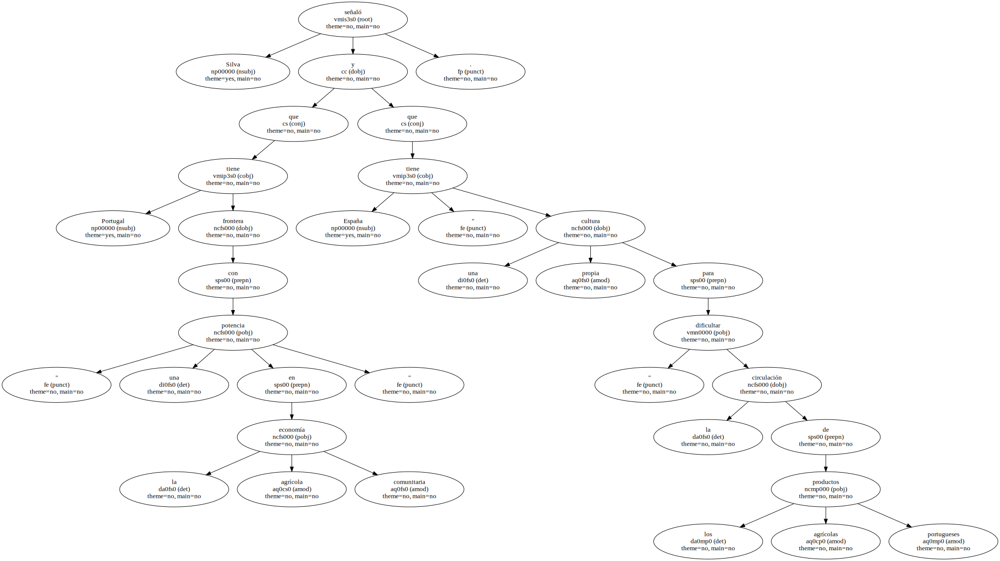
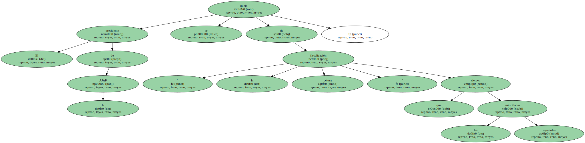
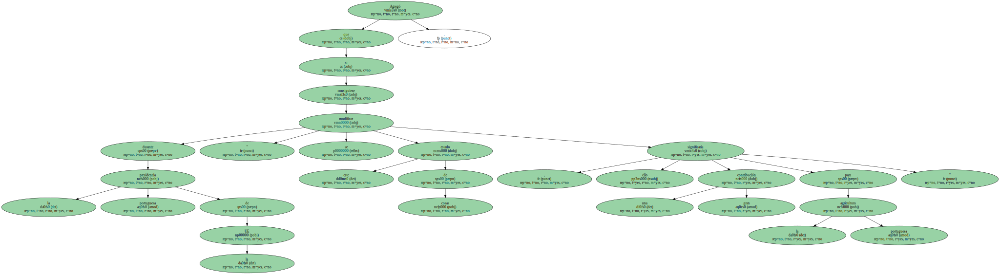
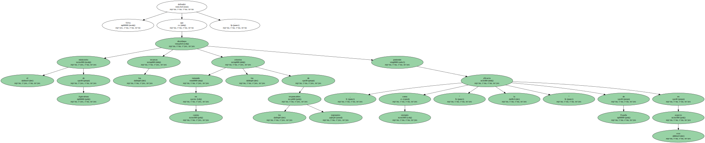

El presidente de la Asociación de los Jóvenes Agricultores Portugueses ( AJAP ) , Constantino Silva , declaró hoy , domingo , que Portugal debería aprovechar la Presidencia de la Unión Europea para que España modifique " su política restrictiva " a los productos agrícolas lusos.

Silva señaló que Portugal tiene frontera con " una potencia en la economía agrícola comunitaria " y que España " tiene una cultura propia para dificultar " la circulación de los productos agrícolas portugueses.
El presidente de la AJAP se quejó de " la celosa fiscalización " que ejercen las autoridades españolas.
Agregó que si durante la presidencia portuguesa de la UE " se consiguiese modificar este estado de cosas , ello significaría una gran contribución para la agricultura portuguesa ".
Silva defendió que el ministerio de Agricultura distribuya los recursos tomando en cuenta los criterios de los responsables regionales , poniendo como ejemplo " la eficacia " de España en este aspecto.
